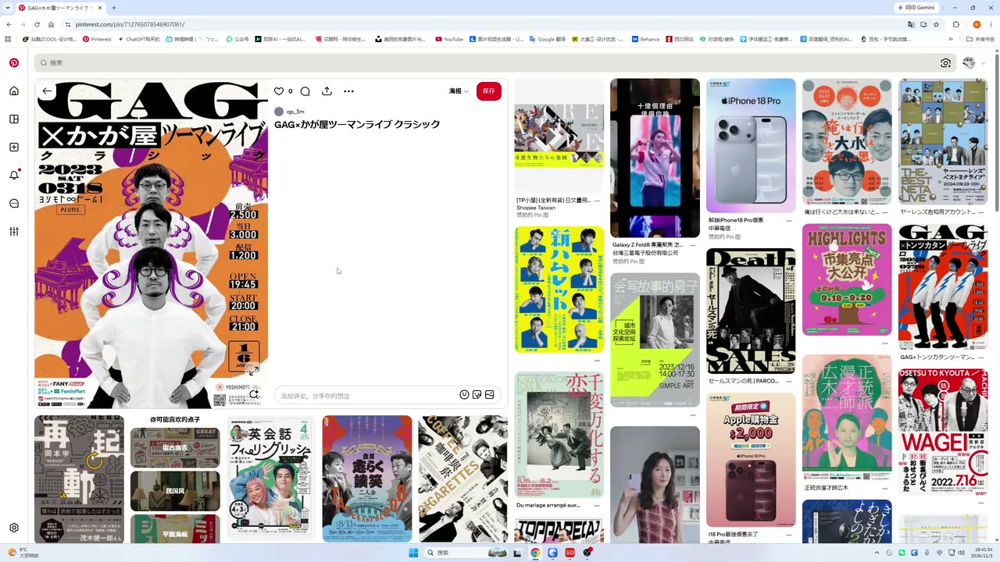

原视频 · 在线回看
点击后联网加载 B 站播放器；本地不下载整段视频。

原视频 · 在线回看
点击后联网加载 B 站播放器；本地不下载整段视频。
来源：视研的董掌柜｜17:06｜Bilibili 原视频｜深度阅读
拿到一张海报，我们可能先觉得“挺好看”，却说不清画面为什么舒服。分析时可以先把主体轮廓和画布放在一起看：主体偏方、偏长还是很窄？它放进画面后，四周还剩多少空间？如果主体细长，硬把它放进宽阔的横向画布，两侧就容易出现大片空地。接下来要看的，是设计如何把空地变成有用的构图区域。
一张人物海报用手绘线条和实拍人物结合，人物两侧还有像发型一样的装饰。主体本身比较窄，右侧便排入时间信息；时间是独立的一组内容，可以分行、竖向排列，形成窄长的矩形。左侧则增加日期文字和一架只露出一部分的钢琴，给另一边补足视觉重量。右侧有较醒目的圆形装饰和时间，左侧的日期与钢琴回应这份重量，主体两旁因此有了各自的安排。
这里可以学到一个实用判断：独立、容易换行的信息，适合放进狭长区域。若把所有字都挤成一大块，或者只在窄主体旁边留出空白，画面就难以平衡。先找出主体轮廓，再决定哪些信息适合成为边缘的长条，哪些元素能给另一侧增加分量，排版会有清楚的起点。
另一张图用两个人物解决单人构图留下的空缺。只保留其中一个人物时，人物朝向和姿势会让右上方显得空；把另一个人物放在空的一侧，两个人便构成互相补位的组合。做海报时，可以先试着单独摆放主体，观察视线、动作和轮廓把空白引向哪里，再判断能否增加第二个主体，或改变现有人物的朝向与姿势。图像生成工具降低了调整人物方向和动作的门槛；是否继续学习节点式工作流，可以跟着实际任务决定。需要控制生成过程或修改其中某一环时，掌握工作流会更有帮助。
第三种处理方式，是让重复的主体与版式一起工作。一张图把相似图像复制、叠放，画面上方和下方又有部分元素被裁切，形成“藏头露尾”的效果。叠加会稍微增加阅读干扰，但当图像之间明暗反差足够明显时，重复本身也能填充空间，带来不寻常的节奏。信息排布并不复杂：一组文字两端对齐，另一组放在对角位置，底部再用放大的文字形成回应。先看整体的重复与对角关系，再看每块信息如何对齐，就能理解丰富的画面怎样由简单规则组成。
分析一张更复杂的海报时，可以先给画布划分区域。顶部是一块独立区域，其余部分再分成视觉区和阅读区：人物、放大的英文和留白集中在视觉区，较长、需要逐行阅读的文字放在一侧。这样划分后，视觉元素不会和说明文字争抢同一片空间。若客户只说想要“高级感”，选图仍是关键的第一步：人物状态、摄影质感和整体明暗先决定画面的气质，字体缩小、加英文等排版处理只能继续塑造气质，无法替一张不合适的图解决问题。
同一张海报还展示了对角平衡。左上角的图形填得比较满，视觉重量较大；右下角的区域更疏，文字和线条便一起给它增加分量。高填充面可以理解为单位面积里元素更密、空隙更少，低填充面则相反。两边无需放相同的物件，也不用做成镜像：一侧用密集的面，另一侧用更大的轮廓、文字或线条，整体看起来大致稳定就够了。重要的是比较两侧的面积、疏密和位置，而非逐个寻找相同元素。
画面里的路径线会把视线带向某个方向，但不一定能单独承担构图重量。在线条较密的一侧加入文字，可以让对角两端的分量更接近；文字既传达姓名等信息，也能成为画面里的形状。分析时，可以先眯起眼看大块区域的疏密，再恢复细节，检查信息文字是否也在参与构图。平衡是整体感受，不要求两角的物件完全相同。
另一张人物图把文字穿插在主体周围：有些文字压在人物后方，有些从人物前方经过，也有些直接叠在上面。前后关系增加了层次，人物身上的线条还能把视线引向内部较密集的位置。版式看似错落，局部仍有隐性的对齐关系：某些字块彼此对齐，另一些边缘呼应画面中的线条。因此，错开文字的位置不等于随意摆放；要让读者看到灵活变化，同时保留可以追踪的秩序。
留白也有具体用途。若画面主体略微偏下，设计者可能是为下方重要姓名或说明留下空间；此时需要判断这块空白是否服务于重点，而不能只按“主体必须居中”去调整。排布时还可以安排紧、松、紧的节奏：先让几组信息聚拢，再留出较宽区域，接着把另一组元素收紧。物件的摆放、云层、草地与背景线条，也能形成指向主体的路径。拍摄时可以改变机位、利用景深，或移开杂物，让背景引导视线而不分散注意力。
看作品时不必把每个细节都解释成唯一答案。比如，某条路径究竟代表钢琴还是其他形状，单凭画面未必能确定；可以先讨论它对角线的走向、与文字的位置关系，以及它是否帮助平衡两侧。把“我看不懂这个符号”转成“它在画面里承担什么作用”，就能在信息不完整时仍然分析构图，同时把不确定的含义留在边界之外。
一次分析可以按这个顺序进行：先看主体轮廓与画布的比例，找出明显的空白；接着观察重复、裁切、文字和配图怎样填充或回应空白；然后把画面粗略分区，比较不同区域的疏密、重量和阅读顺序；最后回到细节，看文字是否既可读又参与构图，留白是否为重要信息服务。随着练习增多，我们看到一张图时就不只是在判断“好不好看”，也能说清楚它用哪些元素组织空间。